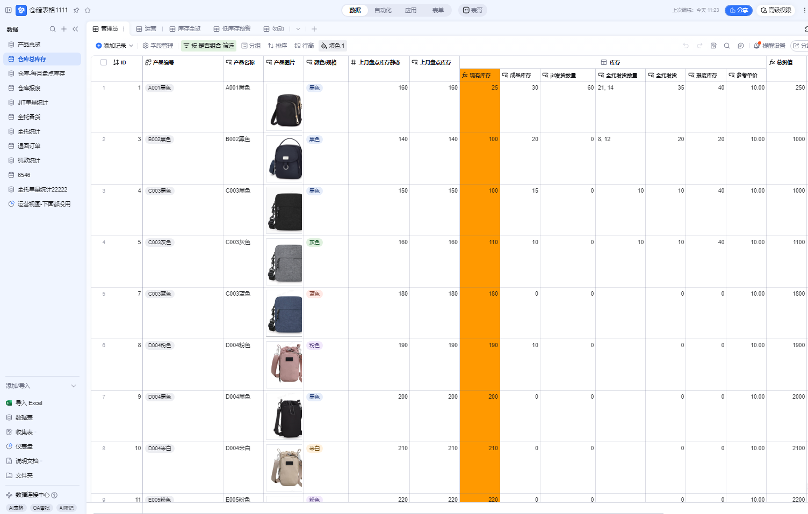
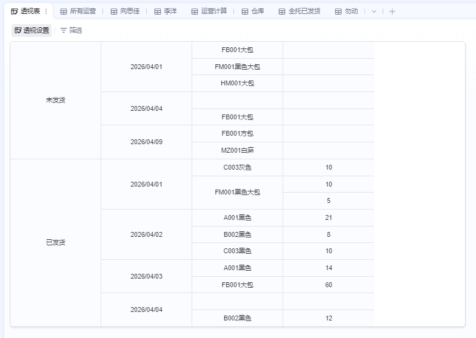

业务背景
商品资料、任务状态、负责人、交付时间和异常记录分散时，团队很难快速知道当前进度和问题位置。
Excel / Multi-dimensional Table
`exceldwb` 对应的是 Excel 多维表和数据管理方向，重点是把商品、任务、状态、资料和人员协作整理成可筛选、可追踪、可复盘的数据视图。


业务背景
商品资料、任务状态、负责人、交付时间和异常记录分散时，团队很难快速知道当前进度和问题位置。
数据拆解
把业务对象拆成商品、任务、状态、人员、时间、资料链接和备注字段，再用视图和筛选承载不同工作场景。
执行方式
用 Excel/WPS 和多维表维护字段规范、数据录入、状态更新、筛选视图和流程记录。
产出价值
让资料维护、任务跟进和异常排查更集中，也为后续自动上架、自动填表和数据采集提供稳定数据底座。
Data Detail 数据细节
明确哪些字段必填、哪些字段用于筛选、哪些字段用于状态追踪，减少表格维护混乱。
按待处理、进行中、已完成、异常等状态建立视图，让不同角色快速看到自己需要处理的部分。
记录处理时间、负责人、结果和备注，为复盘和交接提供依据。
表格结构稳定后，可以进一步作为自动填表、商品上架和数据采集流程的输入。